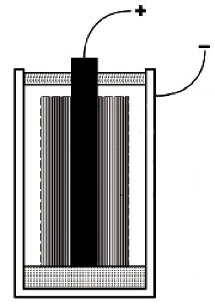
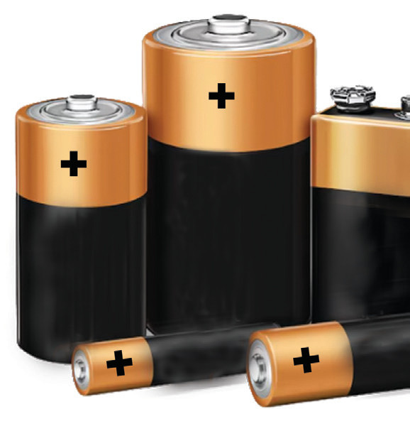

time when zinc ions go into solution, an equivalent number of hydrogen ions move to the copper electrode where they gain electrons and are liberated as hydrogen gas (bubbles):
By losing electrons, copper becomes positively charged and enables it to attract electrons from Zinc through connecting wire. This movement of electrons through the wire is called the electric current. The conventional direction of electric current is from the positive terminal to the negative terminal of the cell, which is the opposite of the direction of flow of electrons.
Mode of action of a dry cell (Leclanché cell)
The Leclanché cell consists of carbon as a positive electrode and zinc as a negative electrode. The electrolyte in this cell is ammonium chloride (NH4Cl) (Sal-ammoniac)
The dry cell is a modified Leclanché cell in which the main electrolyte can be a liquid or a paste. If the electrolyte is a liquid, the cell is said to be a wet cell. Thus, the Leclanché cell is wet. If the electrolyte is a paste, the cell is referred to as a dry cell. Figure 2.55 Shows internal structure of a dry cell and an assortment of dry cells.


The components of a dry cell are the same as those of the Leclanché cell, except that instead of ammonium chloride solution, a cell is filled with a paste of manganese dioxide, ammonium chloride and zinc chloride. The two salts (ammonium chloride and zinc chloride) act as the electrolyte. The negative electrode (zinc) is the one containing the electrolyte and depolarizer.